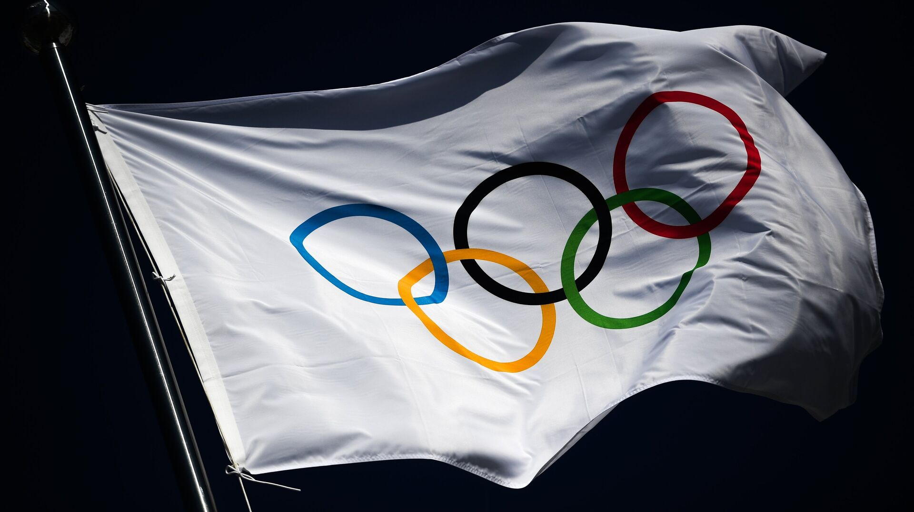

Олимпийская эмблема
Что значат кольца на олимпийской эмблеме?
Олимпийская эмблема – это символ, объединяющий в себе богатство истории,
дух соперничества и стремление к совершенству, присущие Олимпийским
играм. Этот уникальный знак представляет собой не просто графическое
изображение, но настоящую энергетическую идею, воплощенную в форме,
цвете и композиции. Каждый элемент эмблемы несет в себе глубокий смысл,
отражая ценности и принципы Олимпийского движения. Эмблема становится
невидимым мостом, соединяющим прошлое и настоящее, а также объединяющим
различные культуры и нации в общем стремлении к выдающимся достижениям в
спорте и духовном развитии.
Олимпийская эмблема изображает пять кругов, окрашенных в синий, желтый,
черный, зеленый и красный цвета. Эти цвета были выбраны основателем
современных Олимпийских игр, бароном Пьером де Кубертеном, в 1913 году.
Каждый цвет представляет собой по крайней мере один из цветов,
присутствующих на флагах всех стран мира в то время, что символизирует
объединение всех наций в мире через спорт. Согласно официальному
описанию, кольцы представляют пять континентов мира: Африку (черный),
Азию (желтый), Европу (синий), Северную и Южную Америку (красный) и
Австралию и Океанию (зеленый). Идея состоит в том, чтобы объединить
представителей всех этих континентов в едином мире и духе спорта на
Олимпийских играх. Цвета кругов на олимпийской эмблеме не только
символизируют разнообразие континентов, но и выражают идеал единства и
солидарности через спорт.
Европа
Африка
Америка
Азия
Австралия